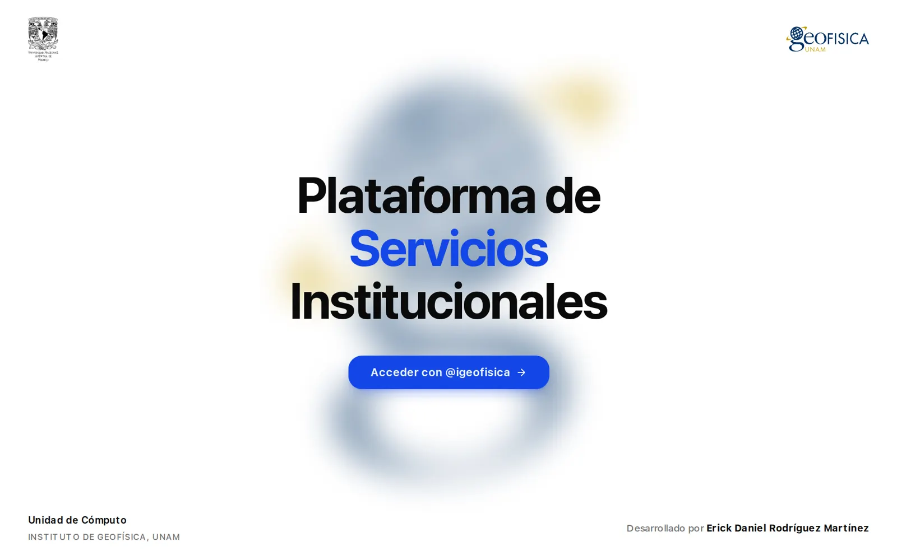

Next.js · TypeScript · PostgreSQL
PSI
La Plataforma de Servicios Institucionales del Instituto de Geofísica de la UNAM.
Reúne en un solo lugar los trámites y servicios del Instituto, con cuentas, roles por unidad y avisos. Está en producción.
psi.geofisica.unam.mxEncore AWS Lambda · Bedrock
El asistente de PSI: ayuda a encontrar y preparar trámites, y nada se ejecuta hasta que la persona lo confirma. Proyecto de Amazon DevDays Latam, en el tema de agentes con serverless.